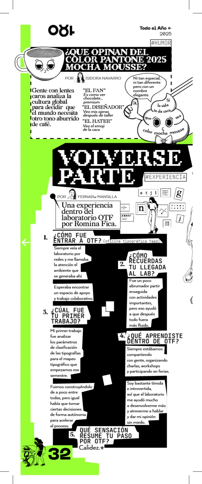
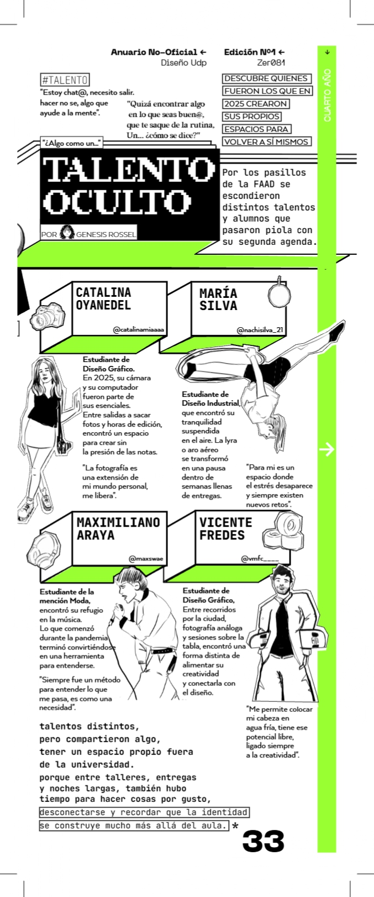
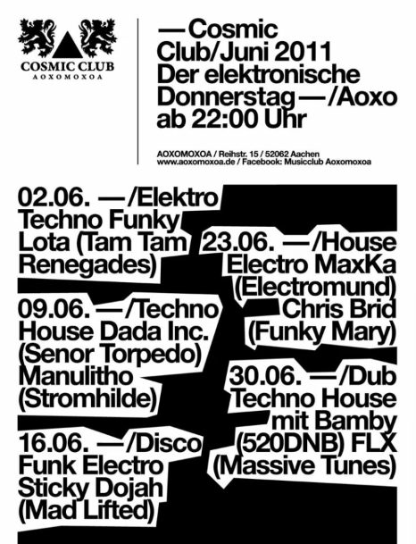
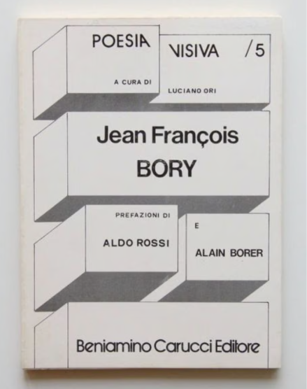

Revista 081


Para la revista 081 realizada en
Taller editorial publicaciónes.
Me tocó diagramar 3 artículos
en una doble página siendo el primero
un meme, el segundo una entrevista
y el tercero un artículo informativo.
Diseño si o si en negro,verde y blanco
Referente número 1

Referente número 2
